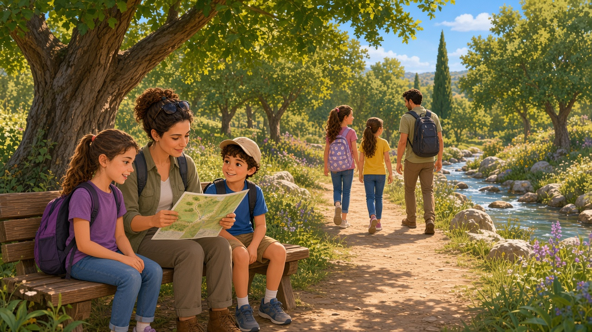

التواصل عن بُعد
تواصل بين مجموعات في الميدان
كيف ننسّق عندما لا توجد تغطية؟

يوم ميدانيّ لمجموعتين
تخرج صفّ تامار، البالغة من العمر عشر سنوات، إلى يوم ميدانيّ في متنزّه طبيعيّ. تقسم المعلّمة الصفّ إلى مجموعتين، ولكلّ واحدة شخص بالغ مرافق. تخرج المجموعة أ مع مرشد إلى مسار مشاهدات قصير. وتخرج المجموعة ب مع مرشدة إلى مسار أطول قرب الجدول. ونقطة اللقاء المحدّدة هي ركن استراحة مظلل قرب الموقف في الساعة الثانية.
قبل الانطلاق يتحقّقون من أنّ لدى المرشد والمرشدة هاتفًا وعدّة إسعافات أوّليّة. تكون تامار في المجموعة أ وتكتب في دفتر الميدان ما تراه في الطريق. تسير المجموعتان معًا حتّى مفترق المسارات ثم تنفصلان في اتّجاهين مختلفين.
مجموعة واحدة وصلت إلى الاستراحة
ينتهي مسار المشاهدات أبكر من المخطّط. في الساعة 13:20 تصل المجموعة أ إلى ركن الاستراحة المظلل. هناك مقاعد وحنفيّة ماء وظلّ جيّد. يقترح المرشد الاستراحة وملء القوارير. تسأل تامار إن كان يمكن إبلاغ المجموعة الأخرى أنّهم وصلوا.
يحاول المرشد الاتّصال بالمرشدة في المجموعة ب. لا توجد تغطية. وعند المعلّمة التي بقيت قرب الموقف تكون التغطية ضعيفة جدًّا أيضًا. من ركن الاستراحة يُرى جزء فقط من المسار النازل إلى الجدول. ولا يمكن رؤية المجموعة الأخرى أو سماعها.
لكلّ مجموعة جزء فقط من الصورة
في المجموعة أ يسألون إن كان الأفضل البقاء في ركن الاستراحة أو العودة إلى الموقف. وإذا وُجد مكان أكثر ظلًّا أقرب إلى الموقف، كيف يُخبرون المجموعة التي ما زالت في الطريق؟ من دون تواصل لا يمكن معرفة ما يحدث لديهم وماذا تقرّر المرشدة.
وقد يكون لدى المجموعة ب أيضًا تحديث مهمّ: جسر رطب قرب الجدول، أو اختيار طريق آخر، أو تقدّم في الجدول الزمنيّ. عندما تعمل مجموعتان كلّ على حدة تحمل كلّ واحدة معلومات مختلفة. ولاتّخاذ قرار مشترك يجب نقل المعلومات في الاتّجاهين.
ماذا ينبغي أن يتضمّن التحديث؟
تحاول تامار أن تفكّر ماذا كانوا سيكتبون لو وُجدت تغطية. جملة «نحن هنا» لا تكفي. ينبغي أن يقولوا من يرسل، وأين هم، وما الساعة، وماذا يطلبون من المجموعة الأخرى: متابعة نقطة اللقاء، أو التوقّف، أو تغيير المكان.
وحتّى بعد إرسال شيء من المهمّ معرفة إن وصل. من دون ذلك قد تنتقل مجموعة إلى الموقف بينما تصل الأخرى إلى ركن الاستراحة. في الميدان قد يسبّب خطأ صغير في التواصل انتظارًا طويلًا أو بحثًا غير ضروريّ.
الظروف قرب ركن الاستراحة
يقع ركن الاستراحة المظلل في منخفض بين الأشجار. يصعد المرشد عشرات الأمتار في المسار ويفحص الهاتف مرّة أخرى. تظهر إشارة تغطية ضعيفة للحظة ثم تختفي. لا يوجد يقين بأنّ نقطة أعلى ستوفّر اتّصالًا مستقرًّا، ولا رغبة في إبعاد المجموعة من دون خطّة.
يحتاج المرشد والمرشدة إلى إبقاء مجموعتهما في مكان آمن وضمن مدى الرؤية. ولا يستطيع المرشد أن يركض على طول المسار ليبحث عن المجموعة الأخرى ويترك الأطفال وحدهم. وينبغي أن يناسب التواصل هذا الوضع.
ما الذي يتّضح وما الذي ما زال ينقص؟
يتّضح أنّ المجموعتين تحتاجان إلى تنسيق المكان والساعة، وأنّ مع إحداهما مرشدًا ومع الأخرى مرشدة. ويتّضح أيضًا أنّ في المنطقة مقاطع بلا تغطية خليويّة، وأنّ كلّ مجموعة ترى فقط ما أمامها.
ما زال غير معروف أين توجد المجموعة ب بالضبط، وهل هي متأخّرة، وهل توجد نقطة في مسارها يمكن نقل المعلومات منها. وليس واضحًا أيضًا إن كان يكفي تحديث باتّجاه واحد أم يلزم ردّ.
قبل أن نبتكر
هنا مجموعتان في حركة، ومرشد ومرشدة، ومعلومات تتغيّر، وظروف ميدان تصعّب الاتّصال المستقرّ. قد يكون الاحتياج إرسال تحديث، أو تلقّي تأكيد، أو طلب تغيير الخطّة. وهذه ليست الشيء نفسه.
من تساعدون أوّلًا؟ وأيّ معلومة يجب أن تمرّ كي ينجح اللقاء؟ وماذا يجدر السؤال عنه ممّن يعرف المتنزّه قبل اقتراح فكرة؟
تلميح من عالم الفضاء
في المهمّات الفضائيّة تُنقل المعلومات عبر مسافات بعيدة بين الفرق والمركبات الفضائيّة والمحطّات على الأرض. وأحيانًا لا يكفي إرسال إشارة، بل من المهمّ أيضًا معرفة أنّ التحديث قد وصل.
أيّ قدرة على نقل المعلومات عن بُعد قد تكون ذات صلة بالمجموعتين، وما الذي ما زال ينبغي فهمه عن المسافة والظروف ونوع التنسيق؟
بعد القراءة — في ورقة الفريق
تحدّثوا في الفريق وأجيبوا استنادًا إلى معلومات القصّة. إذا نقصت معلومة، اكتبوا سؤالًا للمتابعة.
- من تريدون مساعدته في القصّة؟
- ماذا يحاول أن يفعل وما الذي يصعّب عليه ذلك؟
- ما الذي يحتاج إلى أن يكون قادرًا على فعله؟
- ما الذي تريدون معرفته أيضًا قبل تطوير الأفكار؟